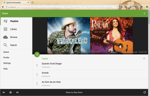

SpotCommander
Dieser Artikel wurde für die folgenden Ubuntu-Versionen getestet:
Ubuntu 14.04 Trusty Tahr
Zum Verständnis dieses Artikels sind folgende Seiten hilfreich:
SpotCommander  ist ein Hintergrunddienst, der die Fernsteuerung von Spotify per Android-App oder Weboberfläche in einem Webbrowser innerhalb des Heimnetzwerks erlaubt. Die Funktionalität beschränkt sich nicht nur auf das Abspielen von Musik, sondern reicht selbst bis zum Bearbeiten von Wiedergabelisten. Für die Nutzung ist kein Spotify Premium-Konto notwendig. Die Bedienoberfläche ist allerdings nur in englischer Sprache verfügbar.
ist ein Hintergrunddienst, der die Fernsteuerung von Spotify per Android-App oder Weboberfläche in einem Webbrowser innerhalb des Heimnetzwerks erlaubt. Die Funktionalität beschränkt sich nicht nur auf das Abspielen von Musik, sondern reicht selbst bis zum Bearbeiten von Wiedergabelisten. Für die Nutzung ist kein Spotify Premium-Konto notwendig. Die Bedienoberfläche ist allerdings nur in englischer Sprache verfügbar.
Installation¶
SpotCommaner ist nicht in den offiziellen Paketquellen enthalten. Man lädt sich das DEB-Paket  herunter und installiert es [1].
herunter und installiert es [1].
Achtung!
Fremdpakete können das System gefährden.
Der Dienst startet dann bei jedem Systemstart automatisch im Hintergrund. Um den Rechner nach der Installation nicht neustarten zu müssen, kann der Dienst auch durch folgenden Befehl [2] gestartet werden:
spotcommander start
Möchte man den Dienst bis zum nächsten Systemstart beenden, so geht das mit:
spotcommander stop
Bedienung¶

Um SpotCommander zu benutzen, installiert man entweder die Android-App (aus F-Droid oder Google Play /  ) oder man nutzt einen Webbrowser. In diesem öffnet man die Adresse IP-ADRESSE/spotcommander, wobei IP-ADRESSE durch die Adresse des Rechners ersetzt wird, auf dem SpotCommander läuft (kann man beispielsweise in der Netzwerkverwaltung nachschauen). Beide Rechner müssen sich im selben Netzwerk befinden.
) oder man nutzt einen Webbrowser. In diesem öffnet man die Adresse IP-ADRESSE/spotcommander, wobei IP-ADRESSE durch die Adresse des Rechners ersetzt wird, auf dem SpotCommander läuft (kann man beispielsweise in der Netzwerkverwaltung nachschauen). Beide Rechner müssen sich im selben Netzwerk befinden.
Die Oberfläche ähnelt der von Spotify gewohnten, ist aber leider nicht auf Deutsch verfügbar. Für die volle Funktionalität muss man das Gerät in Spotify autorisieren, wozu man den entsprechenden Anweisungen auf dem Bildschirm folgt.
Links¶
Wiki
- Hinweise zur Konfiguration eines Proxys, Problembehebungen und mehrF-Droid
/ Google Play / - Android-App
- Erstellt mit Inyoka
-
 2004 – 2017 ubuntuusers.de • Einige Rechte vorbehalten
2004 – 2017 ubuntuusers.de • Einige Rechte vorbehalten
Lizenz • Kontakt • Datenschutz • Impressum • Serverstatus -
Serverhousing gespendet von